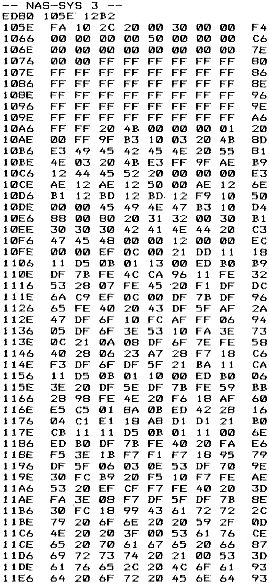
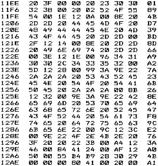

80-Bus Journal |
Februar 1983 · Ausgabe 2 |
Dieses Programm hat eine Besonderheit: Es läuft mit BASIC, wobei allerdings das BASIC-Programm auf einer höheren Adresse beginnt als normal. Davor (ab 1100H) liegt ein Maschinenprogramm.
Im BASIC-Listing selbst taucht der Maschinencode nicht auf.
Wie man mit einem Hilfsprogramm solche gemischten BASIC/Maschinen-Programme selbst erzeugt, die dann auch wie normale BASIC-Programme geladen werden können, werden wir im nächsten Heft vorstellen.
Zur Demonstration nun vorab dieses Programm, das den Bildschirminhalt auf Cassette abspeichert (bis zum „Schnecken-a“) und ihn auch wieder einlesen kann.
Nach einem Kaltstart von BASIC lesen Sie das Programm mit READ ein, und Sie können es nach einem Warmstart benutzen.

Vorbemerkung der Redaktion: Schon lange haben wir darauf gewartet, daß jemand die Plotroutinen zu Michael Bachs Klötzchengrafik schreibt. Nun hat er es letztendlich selbst gemacht, und viele Leser sind ihm sicher dankbar für die Möglichkeiten, die dadurch eröffnet werden. Wir drucken hier aus Platzmangel nur das Hexdump mit dem „eindrucksvollen Demo“ (hier übertreibt M. Bach sicher nicht) ab. Da aber ein Assemblerlisting für eigene Anwedungen notwendig ist, werden wir dies mit der recht ausführlichen Erklärung der einzelnen Unterprogramme im nächsten Heft nachliefern.
Unter diesem reißerischen Titel werde ich hier ebendieses veröffentlichen und dabei eine Art Z80-Assembler-Kurs machen, allerdings wahrscheinlich für Fortgeschrittene, da es mir schwerfällt, mich an meine diesbezüglichen Anfangsschwierigkeiten zu erinnern; zumindest werde ich ein paar Tricks aufzeigen. Da dies aber ein recht langweiliges Unterfangen ist, werde ich dies ohne viel überlegen ’runtertippen und bitte daher, stilistische Mängel zu entschuldigen.
Noch ein Wort zum Demo-Programm vorne dran: Dieser kurze Abschnitt erzeugt ein unerwartetes und dynamisches Kreismuster, wobei von der Invertierungsmöglichkeit Gebrauch gemacht wird, überzeugend ist dabei die hohe Ausführungsgeschwindigkeit (besonders bei 4MHz). Ursprünglich hatte ich vor, die Illusion zu erzeugen, daß man durch einen Tunnel fliegt. Dazu
| Seite 11 von 28 |
|---|